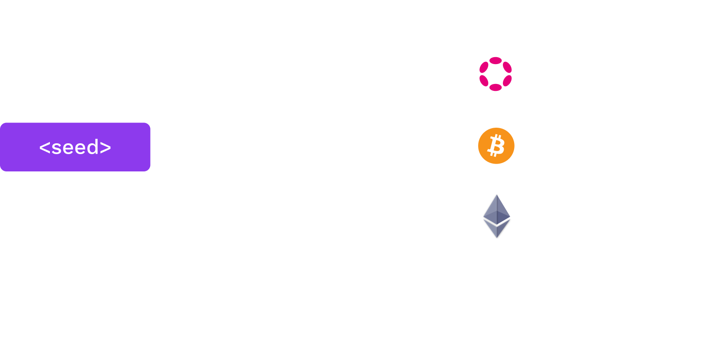

<!DOCTYPE html>
<html lang="en">
  <head>
    <meta charset="utf-8" />
    <meta name="viewport" content="width=device-width, initial-scale=1.0, maximum-scale=1.0, user-scalable=no" />

    <title>Digital Signature Basics</title>
    <link rel="shortcut icon" href="./../../../favicon.ico" />
    <link rel="stylesheet" href="./../../../dist/reset.css" />
    <link rel="stylesheet" href="./../../../dist/reveal.css" />
    <link rel="stylesheet" href="./../../../assets/styles/polkadot-theme.css" id="theme" />
    <link rel="stylesheet" href="./../../../css/highlight/shades-of-purple.css" />

    <link rel="stylesheet" href="./../../.././assets/styles/custom-classes.css" />
    <link rel="stylesheet" href="./../../.././assets/styles/polkadot-theme-base.css" />
    <link rel="stylesheet" href="./../../.././assets/styles/PBA-theme.css" />
    <link rel="stylesheet" href="./../../.././plugin/design-system/index.css" />

  </head>
  <body class="site">
    <header class="site-header">
      <a href="">
        
      </a>
      
    </header>
    <main class="site-reveal reveal">
      <article class="slides">
        <section  data-markdown><script type="text/template">

# Digital Signatures Basics
</script></section><section  data-markdown><script type="text/template">
## Signature API

Signature libraries should generally all expose some basic functions:

- `fn generate_key(r) -> sk;` <br> Generate a `sk` (secret key) from some input `r`.
- `fn public_key(sk) -> pk;` <br> Return the `pk` (public key) from a `sk`.
- `fn sign(sk, msg) -> signature;` <br> Takes `sk` and a message; returns a digital signature.
- `fn verify(pk, msg, signature) -> bool;` <br> For the inputs `pk`, a message, and a signature; returns whether the signature is valid.

<aside class="notes"><p>The input <code>r</code> could be anything, for example the movement pattern of a mouse.</p>
</aside></script></section><section  data-markdown><script type="text/template">
<!-- .slide: data-background-color="#8D3AED" -->

# Rust Demo

## Key Generation and Signing

<aside class="notes"><p>See the Jupyter notebook and/or HackMD cheat sheet for this lecture.</p>
<ol>
<li>Generate a secret key</li>
<li>Sign a message</li>
<li>Verify the signature</li>
<li>Attempt to alter the message</li>
</ol>
</aside></script></section><section  data-markdown><script type="text/template">
## Hash Functions

There are two lectures dedicated to hash functions. But they are used as part of all signing processes.

For now, we only concern ourselves with using Blake2.
</script></section><section  data-markdown><script type="text/template">
## Hashed Messages

As mentioned in the introduction, it's often more practical to sign the hash of a message.

Therefore, the sign/verify API may be _used_ like:

<widget-text center>

- `fn sign(sk, H(msg)) -> signature;`
- `fn verify(pk, H(msg), signature) -> bool;`

</widget-text>

Where `H` is a hash function (for our purposes, Blake2). This means the verifier will need to run the correct hash function on the message.
</script></section><section  data-markdown><script type="text/template">
<!-- .slide: data-background-color="#8D3AED" -->

# Rust Demo

## Hashing a Message

<aside class="notes"><p>See the Jupyter notebook and/or HackMD cheat sheet for this lecture.</p>
<ol>
<li>Use a longer message</li>
<li>Hash it</li>
<li>Verify the signature on the hash</li>
</ol>
</aside></script></section><section  data-markdown><script type="text/template">
## Signing Payloads

Signing payloads are an important part of system design. Users should have credible expectations about how their messages are used.

For example, when a user authorises a transfer, they almost always mean just one time.
</script></section><section  data-markdown><script type="text/template">
## Replay Attacks

Replay attacks occur when someone intercepts and resends a valid message. The receiver will carry out the instructions since the message contains a valid signature.

<widget-text center>

- Since we assume that channels are insecure, all messages should be considered intercepted.
- The "receiver", for blockchain purposes, is actually an automated system.
</script></section><section  data-markdown><script type="text/template">
## Replay Attack Prevention

Signing payloads should be designed so that they can only be used one time and in one context. Examples:

<widget-text center>

- Monotonically increasing account nonces
- Timestamps (or previous blocks)
- Context identifiers like genesis hash and spec versions
</script></section><section  data-markdown><script type="text/template">
# Signature Schemes
</script></section><section  data-markdown><script type="text/template">
## ECDSA

- Uses Secp256k1 elliptic curve.
- ECDSA (used initially in Bitcoin/Ethereum) was developed to work around the patent on Schnorr signatures.
- ECDSA complicates more advanced cryptographic techniques, like threshold signatures.
</script></section><section  data-markdown><script type="text/template">
## Ed25519

- Schnorr signature designed to reduce mistakes in implementation and usage in classical applications, like TLS certificates.
- Signing is 20-30x faster than ECDSA signatures.
</script></section><section  data-markdown><script type="text/template">
## Sr25519

Sr25519 addresses several small risk factors that emerged from Ed25519 usage by blockchains.
</script></section><section  data-markdown><script type="text/template">
## Use in Substrate

- Sr25519 is the default key type in most Substrate-based applications.
- Its public key is 32 bytes and generally used to identify key holders (likewise for ed25519).
- Secp256k1 public keys are _33_ bytes, so their _hash_ is used to represent their holders.
</script></section><section  data-markdown><script type="text/template">
## HDKD

Hierarchical Deterministic Key Derivation


</script></section><section  data-markdown><script type="text/template">
## Hard vs. Soft

Key derivation allows one to derive (virtually limitless) child keys from one "parent".

Derivations can either be "hard" or "soft".
</script></section><section  data-markdown><script type="text/template">
## Hard Derivation

Hard derivation requires the secret key and derives new child secret keys.

Typical "operational security" usages should favor hard derivation over soft derivation because hard derivations avoid leaking the sibling keys, unless the original secret is compromised.
</script></section><section  data-markdown><script type="text/template">
## Hard Derivation in Wallets

Wallets can derive keys for use in different consensus systems while only needing to back up one secret plus a pattern for child derivation.


</script></section><section  data-markdown><script type="text/template">
## Hard Derivation in Wallets

Let's imagine we want to use this key on multiple networks, but we don't want the public keys to be connected to each other.


</script></section><section  data-markdown><script type="text/template">
<!-- .slide: data-background-color="#8D3AED" -->

# Rust Demo

## Hard Derivation

<aside class="notes"><p>See the Jupyter notebook and/or HackMD cheat sheet for this lecture.</p>
<p>Mention that these derivations create entirely new secret seeds.</p>
</aside></script></section><section  data-markdown><script type="text/template">
## Soft Derivation

Soft derivation allows one to create derived addresses from only the public key. Contrary to hard derivation, all addresses have related or effectively the same private key.

<aside class="notes"><p>Soft derivations can break some niche advanced protocols, but our sr25519 crate avoids supporting protocols that conflict with soft derivations.</p>
</aside></script></section><section  data-markdown><script type="text/template">
## Soft Derivation in Wallets

Wallets can use soft derivation to link all payments controlled by a single private key, without the need to expose the private key for the address derivation.

**Use case:** _A business wants to generate a new address for each payment, but should be able to automatically give customers an address without the secret key owner deriving a new child._

<aside class="notes"><p>See: <a href="https://wiki.polkadot.network/docs/learn-accounts#soft-vs-hard-derivation">https://wiki.polkadot.network/docs/learn-accounts#soft-vs-hard-derivation</a></p>
</aside></script></section><section  data-markdown><script type="text/template">
## Soft Derivation

- Note that these generate new addresses, but use the same secret seed.
- We can also use the same paths, but only using the Account ID from `//polkadot`. It generates the same addresses!

<aside class="notes"><p>Let&#39;s go back to Rust to soft derive more children.</p>
</aside></script></section><section  data-markdown><script type="text/template">
<!-- .slide: data-background-color="#8D3AED" -->

# Rust Demo

## Soft Derivation

<aside class="notes"><p>See the Jupyter notebook and/or HackMD cheat sheet for this lecture.</p>
</aside></script></section><section  data-markdown><script type="text/template">
# Mnemonics and Seed Creation
</script></section><section  data-markdown><script type="text/template">
## Mnemonics

Many wallets use a dictionary of words and give people phrases, often 12 or 24 words, as these are easier to back up/recover than byte arrays.

Some people create their own phrases. This is usually stupid.
</script></section><section  data-markdown><script type="text/template">
## Dictionaries

<widget-columns>
<widget-column>

There are some standard dictionaries to define which words (and character sets) are included in the generation of a phrase. Substrate uses the dictionary from BIP39.

</widget-column>
<widget-column>

| No. | word    |
| --- | ------- |
| 1   | abandon |
| 2   | ability |
| 3   | able    |
| 4   | about   |
| 5   | above   |

<widget-text style="font-size: .6em;" center>

_The first 5 words of the [BIP39 English dictionary](https://github.com/bitcoin/bips/blob/master/bip-0039/english.txt)_

</widget-column>
</widget-columns>
</script></section><section  data-markdown><script type="text/template">
## Mnemonic to Secret Key

Of course, the secret key is a point on an elliptic curve, not a phrase.

BIP39 applies 2,048 rounds of the SHA-512 hash function to the mnemonic to derive a 64 byte key.

Substrate uses the entropy byte array from the mnemonic.
</script></section><section  data-markdown><script type="text/template">
## Portability

Different key derivation functions affect the ability to use the same mnemonic in multiple wallets.
</script></section><section  data-markdown><script type="text/template">
## Next Lesson

<widget-text center>

- Certificates
- Multi-signature schemes
</script></section>
      </article>
    </main>

    <script src="./../../../dist/reveal.js"></script>
    <script src="./../../../plugin/markdown/markdown.js"></script>
    <script src="./../../../plugin/highlight/highlight.js"></script>
    <script src="./../../../plugin/zoom/zoom.js"></script>
    <script src="./../../../plugin/notes/notes.js"></script>
    <script src="./../../../plugin/math/math.js"></script>

    <script type="module">
      import DesignSystem from "./../../../plugin/design-system/design-system.js"

      function extend() {
        var target = {};
        for (var i = 0; i < arguments.length; i++) {
          var source = arguments[i];
          for (var key in source) {
            if (source.hasOwnProperty(key)) {
              target[key] = source[key];
            }
          }
        }
        return target;
      }

      // default options to init reveal.js
      var defaultOptions = {
        controls: true,
        progress: true,
        history: true,
        center: true,
        transition: 'default', // none/fade/slide/convex/concave/zoom
        plugins: [
          RevealMarkdown,
          RevealHighlight,
          RevealZoom,
          RevealNotes,
          RevealMath,
          DesignSystem
        ]
      };

      // options from URL query string
      const queryOptions = Reveal().getQueryHash() || {};

      const options = extend(defaultOptions, {"width":1400,"height":900,"margin":0,"minScale":0.2,"maxScale":2,"transition":"none","controls":true,"progress":true,"center":true,"slideNumber":true,"backgroundTransition":"fade"}, queryOptions);
      options.baseUrl = '';
      Reveal.initialize(options);
    </script>
  </body>
</html>
